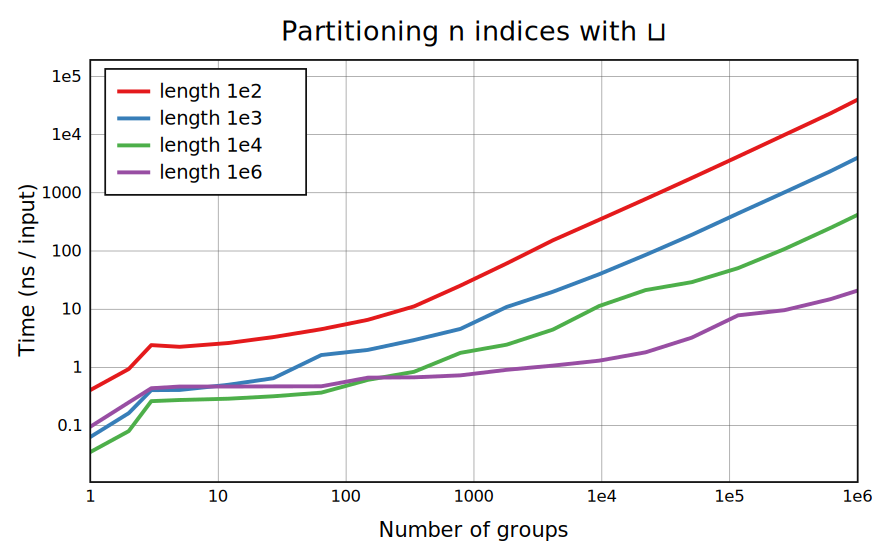
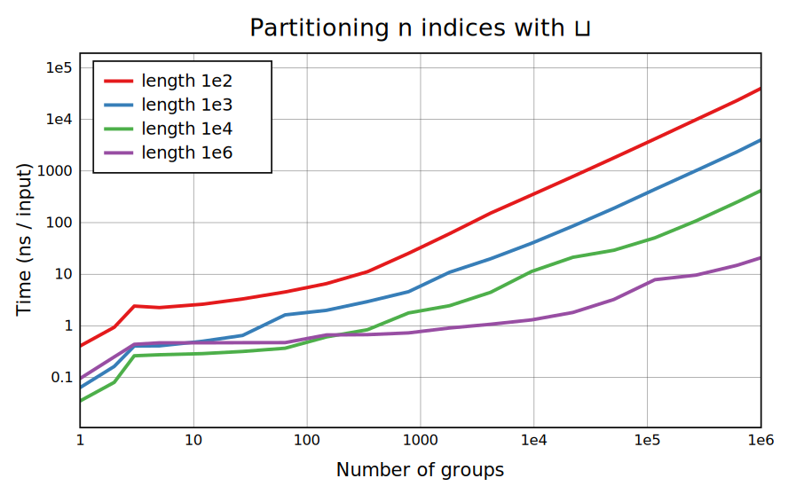
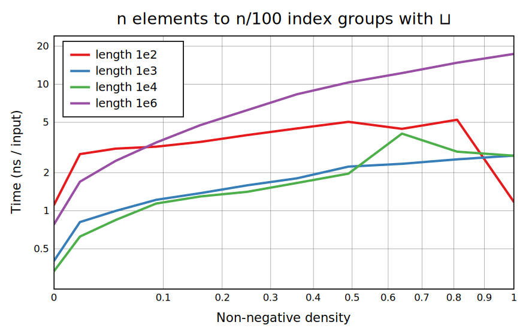
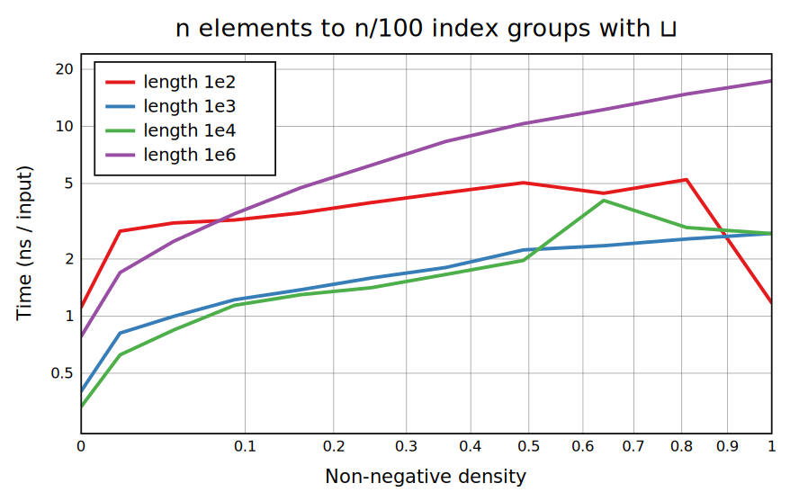

The first pair of benchmarks shows the case of a uniformly random 𝕨 with a varying range. In the middle the generic algorithm is used and the main cost is that of moving each argument value to the required output group. At the right, the cost of allocating arrays for the groups begins to matter, and eventually there are many empty groups that don't count in the denominator. They're all copies of the same empty array but making and freeing so many copies begins to get expensive. At the left, if the range is 1 the result is simply ⋈𝕩, and if the range is 2, Replicate is used to get both groups.
This pair is the same except that 𝕨 is sorted, so that the groups are slices from 𝕩. CBQN takes virtual slices so it doesn't touch the data in 𝕩 at all, and the time mostly just depends on the number of non-empty groups created. This does mean all of 𝕩 will stay in memory for as long as any slice is still used. Group Indices just creates the indices ↕≠𝕩 and then groups them, with the first part taking most of the time when the number of groups is small enough.
This benchmark adds ¯1s to 𝕨 to drop elements; when an initial statistics pass finds a lot of these, Replicate is used to filter them out quickly. For length 1e2 there's only one output group, so at density 1 the ⋈𝕩 case applies.
 
